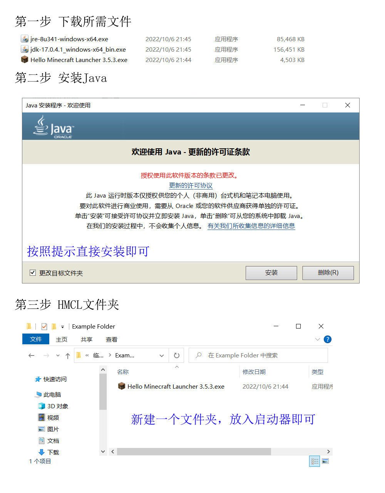
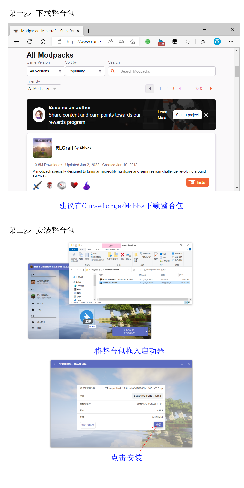

作者：还给我六个币
第一步：下载所需文件。此步骤有两种方法，可以去官方网站下载，也可以去作者的百度网盘下载。官网（Java 8、Java 17、HMCL启动器），百度网盘。
第二步：安装Java。点击下载好的Java安装包，按指引安装即可。
第三步：将下载的HMCL启动器放入一个空文件夹内（建议在C盘之外）。
提示：如果不知道下载哪个版本的Java，请参见如何辨别系统的位数。
第一步：下载整合包。可以去Curseforge或Mcbbs等平台下载，下载后应该是一个压缩包。
第二步：安装整合包。打开启动器，将整合包文件拖拽至启动器窗口背景位置，按照提示安装后返回启动器主菜单启动游戏即可。
